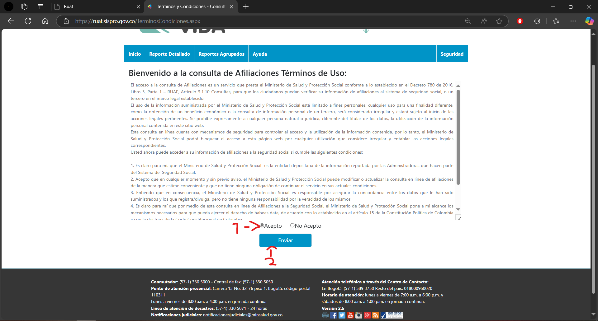
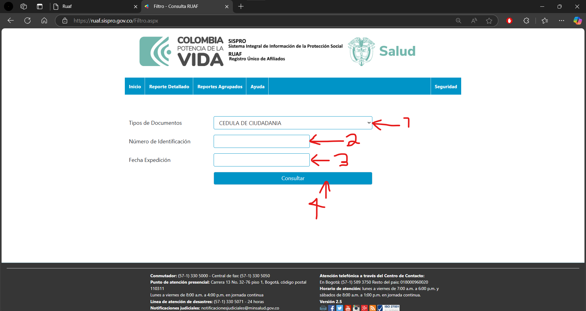
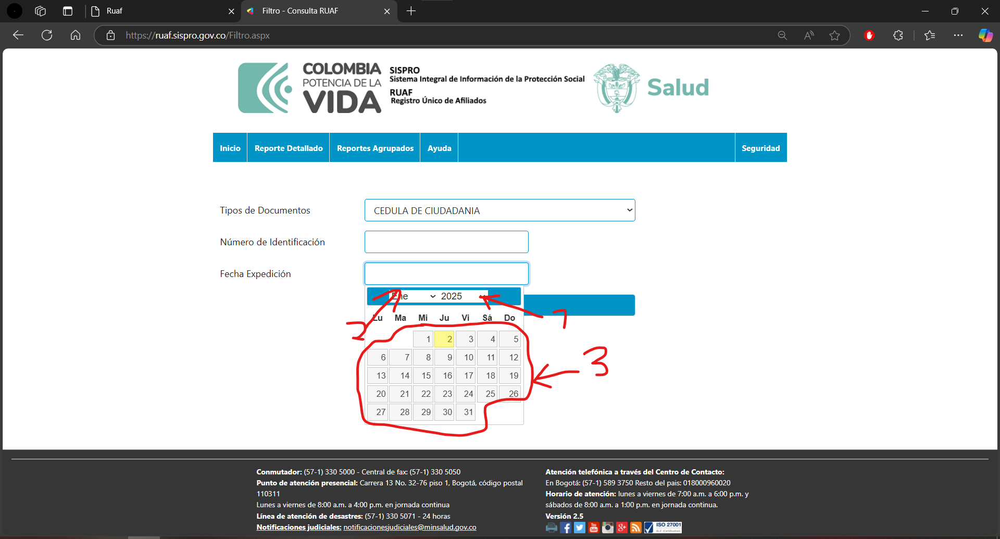
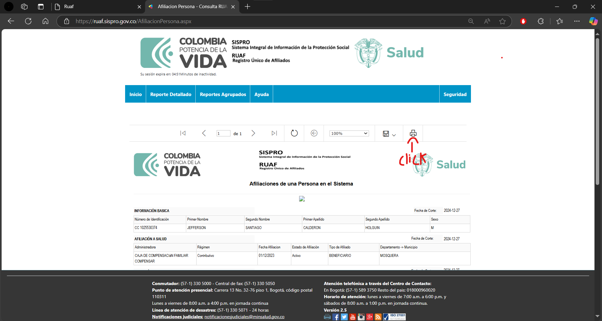
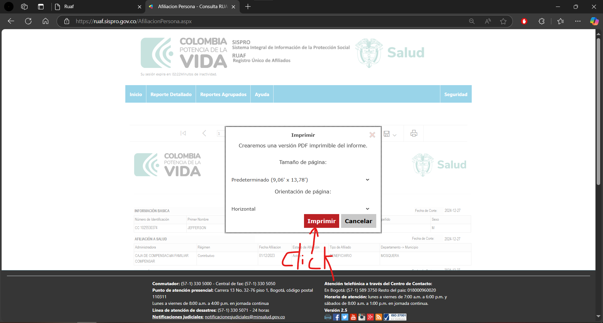
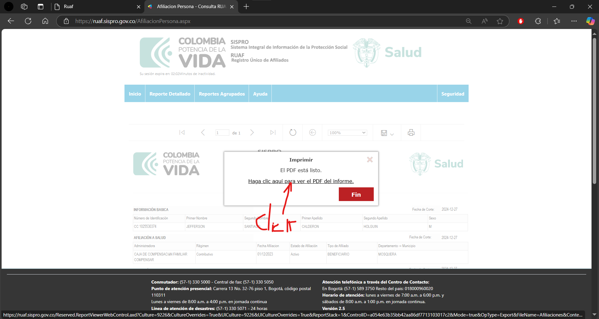
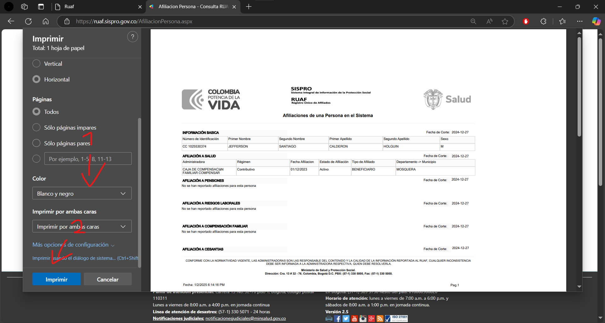

Instrucciones
-
Paso 1.
Abre la página https://ruaf.sispro.gov.co/TerminosCondiciones.aspx.
-
Paso 2.
Baja la página hasta encontrar el botón de enviar. Haz click en "Acepto" y después en el botón "Enviar".
 -
Paso 3.
Se selecciona el tipo de documento del cliente (se observa en número 1). Después se ingresa el número de documento (se observa en número 2). Después se pide al cliente la fecha de expedición del documento (número 3).
Como se muestra, se selecciona el año primero (número 1), después el mes (número 2) y por último el día (número 3).
Por último, se da click en "consultar" (número 4).
-
Paso 4.
Después se da click en imprimir como se muestra en la imagen.
 -
Paso 5.
Después se vuelve a dar click en "imprimir".
 -
Paso 6.
Después se da click donde se indica en la imagen.
 -
Paso 7.
Después de abierto aparece esto, se selecciona si es a color o a blanco y negro (número 1). Después se da click en "Imprimir" (número 2).
